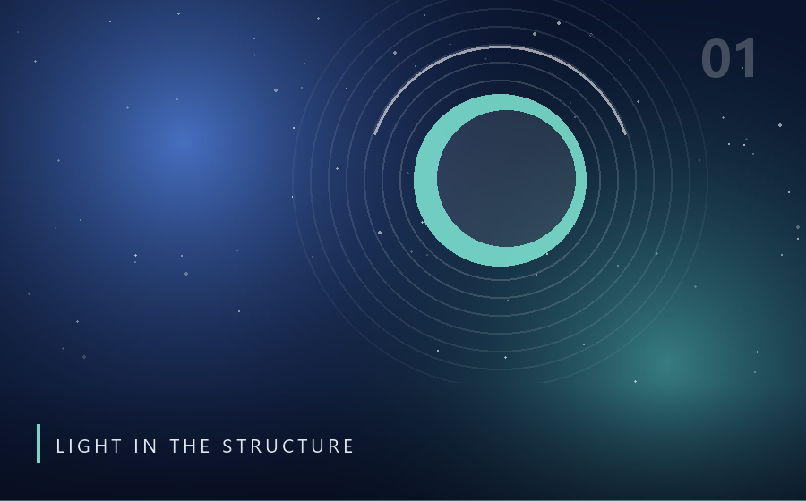
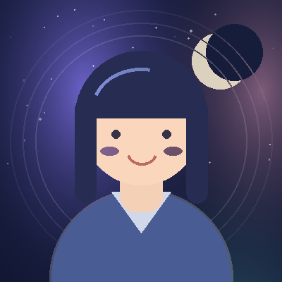
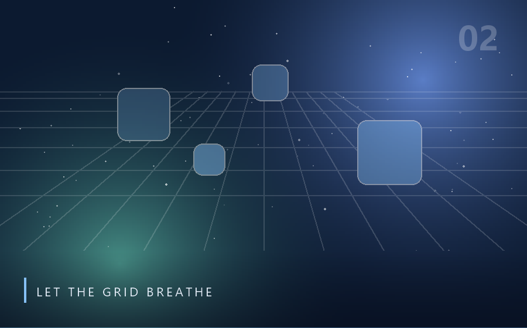
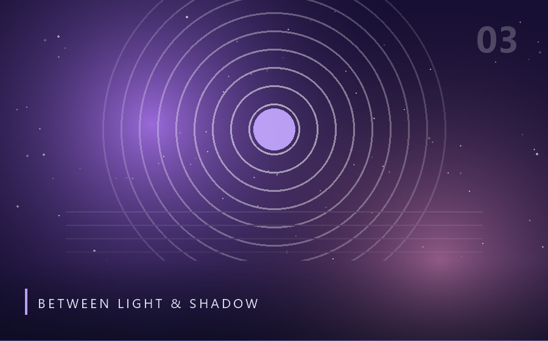
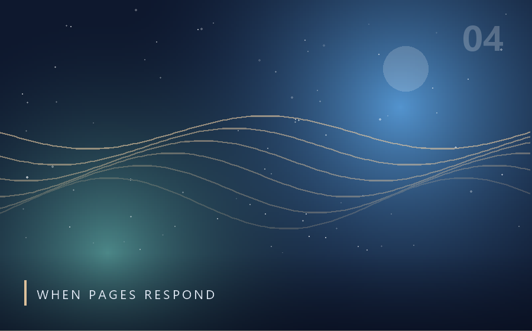
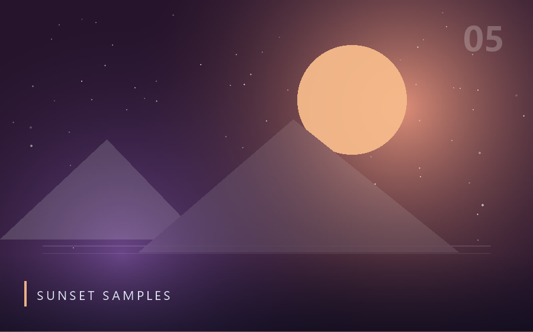
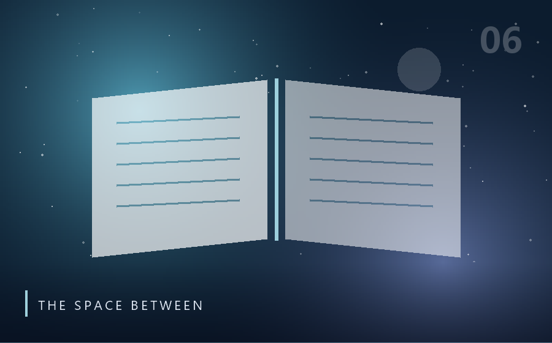

01
HELLO, IT'S ME
你好，我是 风眠
数字媒体技术专业 · 大三在读 ｜ 把光、影和代码写进同一页里。
这里是我的数字手记：前端笔记、交互实验、动效练习，也有影像与版式的碎碎念。整页从零手写，HTML5 搭骨架、CSS3 造光影、JavaScript 给一点回应。慢慢逛，别着急。
03年级 / YEAR
06手记 / POSTS
04方向 / FIELDS
2026持续更新
SCROLL ↓ EXPLORE
关于我
ABOUT ME · 在技术与美学之间来回走动
我是风眠，数字媒体技术专业大三学生。这个专业很有意思：一半时间对着代码和屏幕，一半时间对着构图、色彩和镜头。我更愿意把它们当成同一件事——把想法做成别人看得见、点得动的东西。
这两年系统学了网页设计与前端开发，也在课里接触三维建模、影像后期和交互原型。相比死记属性，我更喜欢边做小页面边查文档：一个渐变调半小时、一个悬浮效果改三版，最后把踩过的坑写成手记。
「眠光集」就是这学期的综合实践成果。从页面规划、布局草图，到一行行写样式和调交互，全部自己完成；配图也是用代码画出来的。下一版想加上文章详情页和评论列表。
正在打磨的能力
HTML5 / CSS3 页面构建88%
JavaScript 交互实现72%
动效与视觉设计80%
影像拍摄与后期66%
作品展示 · 最近手记
POSTS & WORKS · 每张卡片都由 article 语义标签承载

02
03
04
05
06让代码有温度，让画面有逻辑。
— 风眠 · 写在第三次改版之后 —
给我留言
CONTACT · 想聊交互、聊影像，或者只是打个招呼都可以